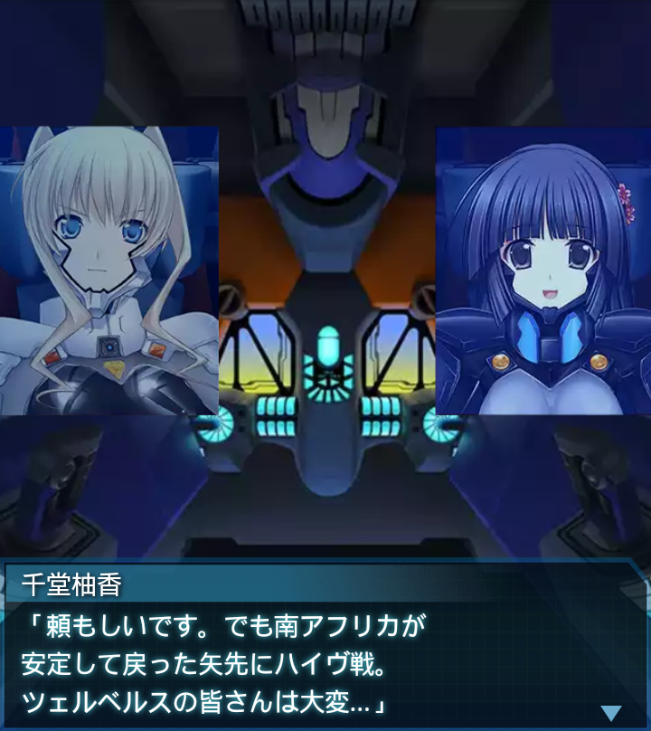

千堂柚香
「合同演習、お疲れ様でした。砂上戦は私もまだまだ不慣れで
とても勉強になります」
千堂柚香
「ツェルベルスの皆さんは一人一人が一騎当千。模擬戦で、こんなに
敗北感を味わうのは初めてです」
イルフリーデ
「私も千堂少尉から学ぶ事は沢山ありました。なにせ今度の作戦は
フェイズ５ハイヴの攻略…」
イルフリーデ
「お互い学べる事は学び尽くして赴かなくては。攻略はおろか、
きっと生還も難しいでしょう」
イルフリーデ
「ですが、南アフリカでの戦いと、コンゴハイヴ攻略は置いてきぼり
だったので腕が鳴りますけど！」

千堂柚香
「頼もしいです。でも南アフリカが安定して戻った矢先にハイヴ戦。
ツェルベルスの皆さんは大変…」
イルフリーデ
「みんな本当に頑張ってるなぁ。でも私達も激戦を終えたばかり。
頑張りじゃ負けてませんっ！」
イルフリーデ
「それに私とベスターナッハ中尉が原隊復帰したわけですし、
ツェルベルス全員集合ですっ」
イルフリーデ
「ツェルベルス全隊と、千堂少尉達ウォードッグ中隊、そして大尉！
全員の力があれば…………」
『誰』
「…？全員の力があればどうした、フォイルナー少尉…」
イルフリーデ
「あの不自然な砂煙……。やっぱりＢＥＴＡ！砂中から
ＢＥＴＡ多数出現！大尉！」
『誰』
「振動センサーが通用しない砂漠。急な接近を許すのが本当に厄介だ。
全機応戦！演習の締めにする！」